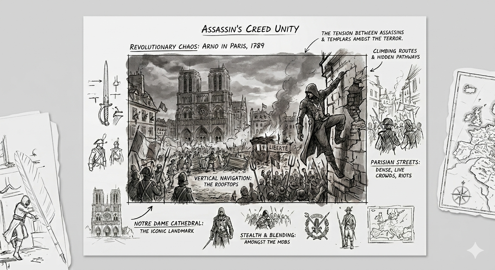

Concepção
Realização do desejo do públido de um jogo na revolução francesa, suas artes conceituais vazadas ja cativaram o público antes do projeto ser anunciado

Aprofunde-se na história de Arno e viva a revolução francesa em um dos mais amados jogos da saga Assassin's Creed.

Realização do desejo do públido de um jogo na revolução francesa, suas artes conceituais vazadas ja cativaram o público antes do projeto ser anunciado

A recriação fiel da cidade de Paris durante a revolução em escala quase real em 3D.

Mocap para a animação de todos os personagens incluindo NPCs, fazendo com que seja considerado o melhor parkour da saga até hoje.

Atualização da Anvil, engine que garantiu que os gráficos do jogo ficassem muito a frente de seus concorrentes em 2014.
Morte do pai do Arno.
Assassinato de François de la Serre.
Entrada na Irmandade dos Assassinos.
Caçada aos Templários radicais.
Confronto final contra Germain.


Estudios da Ubisoft envolvidos simultaneamente no projeto
NPCs controlados pela IA de uma vez só em apenas uma cena
Funcionários da equipe ativos trabalhando no projeto